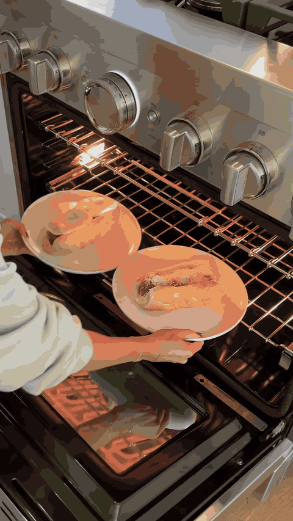

Slow Cooker Coconut Red Curry Chicken & Potatoes

High Protein Green Chili Chicken Cornbread Meal Prep

Baby Back Ribs

Crockpot Meatball Subs
Slow Cooker Coconut Red Curry Chicken & Potatoes
Make this easy slow cooker chicken curry with tender chicken, potatoes, veggies and creamy coconut red curry sauce for a flavorful dinner.
Ingredients
- 1½ lbs chicken breast or boneless (skinless chicken thighs)
- 1 lb red baby potatoes (halved or quartered if large)
- 1 tbsp olive oil
- 1 tsp salt
- ½ tsp black pepper
- 1 tsp garlic powder
- 1 tsp onion powder
- 5 oz mild red curry paste
- 1 can full-fat coconut milk
- ½ cup chicken bone broth
- 1 bag stir-fry vegetables (Asian-style frozen )
- red pepper flakes (for heat)
- additional seasonings to taste
Steps
- Add the Potatoes- Place the red baby potatoes in the bottom of your slow cooker, spreading them into an even layer.
- Add the Chicken- Place the chicken breasts or boneless, skinless chicken thighs directly on top of the potatoes.
- Season the Chicken- Drizzle the olive oil over the chicken. Add the salt, black pepper, garlic powder, and onion powder. Mix everything together until the chicken is evenly coated while keeping the potatoes at the bottom of the slow cooker.
- Add the Curry Ingredients- Pour in the full-fat coconut milk, mild red curry paste, and chicken bone broth. Give everything a gentle stir until the curry paste is incorporated into the liquid. Try to keep the potatoes toward the bottom of the slow cooker.
- Slow Cook- Cover and cook on: LOW: 4–6 hours or HIGH: 3–4 hours. Cook until the chicken is fully cooked and the potatoes are fork-tender.
- Add the Vegetables- About 30 minutes before serving, add the frozen stir-fry vegetables. Give everything a good stir and try to get the vegetables as submerged in the curry sauce as possible.
- Finish Cooking- Cover and cook for another 30 minutes, or until the vegetables are heated through and tender.
- Adjust the Flavor- Taste the curry and adjust the seasonings as desired. Add additional salt, black pepper, garlic powder, curry paste, or other seasonings to taste. For extra heat, sprinkle in some red pepper flakes or chili flakes.
- Serve- Spoon the tender chicken, potatoes, vegetables, and creamy coconut red curry sauce into bowls. Serve with jasmine rice, brown rice, cauliflower rice, or naan bread and garnish with fresh cilantro if desired. Serve and Enjoy!
Source: Easy Eats Dietitian
High Protein Green Chili Chicken Cornbread Meal Prep
This Green Chili Chicken Cornbread Meal Prep combines creamy, cheesy green chili chicken with a sweet and savory cornbread topping for a comforting meal that feels anything but boring. Made with rotisserie chicken, Greek yogurt, corn, green chilis, and a honey cornbread topping, these individual meal prep bowls are easy to make and packed with protein.
Ingredients
- 16 oz cooked chicken, shredded
- 4 tbsp chipotle pepper sauce (can use chipotle peppers in adobo sauce, blended)
- 4 tbsp taco seasoning (I use Siete)
- 1 1/3 cup plain nonfat Greek yogurt
- 4 tbsp light cream cheese
- 1 cup corn
- 1 tsp fresh lime juice
- 4 tbsp salsa verde
- 2 tbsp diced green chilis
- 1/2 cup low-fat cheddar cheese, shredded
- 1 cup honey cornbread mix (I use Jiffy)
- 1/4 cup low-fat cottage cheese, blended (I use Good Culture)
- 1 large egg
- 1-2 fresh jalapeños (optional)
- 1 tsp butter, melted (optional, for serving)
- 1 tbsp honey (optional, for serving)
Steps
- Preheat your oven to 375°F.
- Soften the cream cheese. Grease four oven-safe meal prep containers that hold at least 26 ounces each.
- Divide the softened cream cheese, Greek yogurt, green salsa, chipotle pepper sauce, taco seasoning, and lime juice between the containers. Mix until smooth and well combined.
- Add the shredded chicken and corn to each container and mix until evenly coated in the creamy sauce.
- In a separate bowl, combine the honey cornbread mix, green chilis, shredded cheddar cheese, egg, and blended cottage cheese. Mix until just combined.
- Divide the cornbread mixture evenly between the four containers, spreading it over the chicken mixture. You should have approximately 1/3 cup of cornbread batter per container.
- If desired, top each with sliced fresh jalapeños.
- Place the containers on a baking sheet and bake at 375°F for 40–50 minutes, or until the cornbread topping is cooked through and a toothpick inserted into the center comes out clean.
- If desired, melt the butter and mix it with the honey. Drizzle or brush a little over each serving before eating.
- Let the meal prep bowls cool before covering and refrigerating.
Source: Simple Recipes by Sam
Baby Back Ribs
Recipe courtesy of Sandra Lee (Semi-Homemade Cooking, episode: Weekend Gathering). Level: Easy.
Ingredients
- 2 full racks (quartered) baby back ribs
- 1-quart beef broth
- 2 cups barbeque sauce (recommended: Bullseye Original Barbeque Sauce)
- 1 cup honey
Steps
- Place ribs and beef broth in a large heavy pot or Dutch oven, and add enough water to fully cover ribs. Simmer over low heat for about 1 hour. Once tender, remove and set aside.
- Preheat the grill to medium heat. In a medium bowl, combine barbeque sauce and honey. Baste ribs generously with sauce and grill for about 4 minutes on each side or until desired degree of doneness.
Source: Food Network (Sandra Lee)
Crockpot Meatball Subs
if you haven’t made meatball subs yet this season, this is your sign 🫵🏼
Ingredients
- 1.5 lb lean ground beef
- 1 small yellow onion, diced
- 3–4 garlic cloves, minced
- ½ cup Italian breadcrumbs
- ½ cup freshly grated Parmesan cheese
- 1 egg
- Oregano, salt & pepper to taste
- 2x (24 oz) Jars Marinara Sauce (I like the Rao’s roasted garlic)
- Sub Rolls
- Cheese Slices for Topping (Provolone, Mozzarella, or Parmesan)
Steps
- In a large bowl, combine ground beef, onion, garlic, breadcrumbs, Parmesan, egg, oregano, salt, and pepper.
- Roll into 1–1½ inch meatballs
- Add 1 jar of marinara to the bottom of the crockpot
- Place meatballs in a single layer if possible
- Pour the second jar of sauce over the top, ensuring all meatballs are covered
- Cook on high for 3–4 hours or low for 5–6 hours, stirring once or twice
- Assemble subs and top with cheese of choice! I like to throw the subs in the oven on broil for a few minutes to let the cheese melt & toast the rolls!
Source: TikTok (@morganpetersonn)